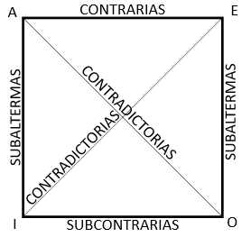

Oposición de proposiciones
Si consideramos la clasificación de las proposiciones categóricas solamente en cuanto a su cantidad y su cualidad, obtenemos cuatro combinaciones posibles, cada una de las cuales convencionalmente ha recibido como nombre una vocal:
1) Proposiciones universales-afirmativas: A
2) Proposiciones universales-negativas: E
3) Proposiciones particulares-afirmativas: I
4) Proposiciones particulares-negativas: O
PROPOSICIONES OPUESTAS: son aquellas que, teniendo el mismo sujeto y el mismo predicado difieren en cantidad, o en cualidad, o en ambas cosas.
Por ejemplo, en el caso de la proposición: Todos los tigres son felinos (A) sus proposiciones opuestas son:
"Ningún tigre es felino" E) (sólo difiere en cualidad)
"Algunos tigres sin felinos" (I) (sólo difiere en cantidad)
"Algunos tigres no son felinos" (O) (difiere tanto en cantidad, como en cualidad)
Estos cuatro tipos de proposición (A, E, I, O) se han dispuesto gráficamente en lo que se conoce como “cuadrado (o cuadro) de la oposición”, como se ve a continuación:
Cuadro de oposición de las proposiciones
Como se aprecia en este cuadro, cada una de las relaciones de oposición que se establecen entre estas proposiciones recibe un nombre distinto:
PROPOSICIONES CONTRADICTORIAS: son aquellas proposiciones opuestas que difieren entre sí en cantidad y cualidad (A-O) (E-I)
PROPOSICIONES CONTRARIAS: son aquellas proposiciones opuestas que difieren entre sí en cualidad y son ambas universales (A-E)
PROPOSICIONES SUBCONTRARIAS: son aquellas proposiciones opuestas que difieren entre sí en cualidad y son ambas particulares (I-O)
PROPOSICIONES SUBALTERNAS: aquellas proposiciones opuestas que difieren entre sí en cantidad, pero no en cualidad (A-I) y (E-O)
Tomando en cuenta lo anterior, resuelve los siguientes ejercicios: